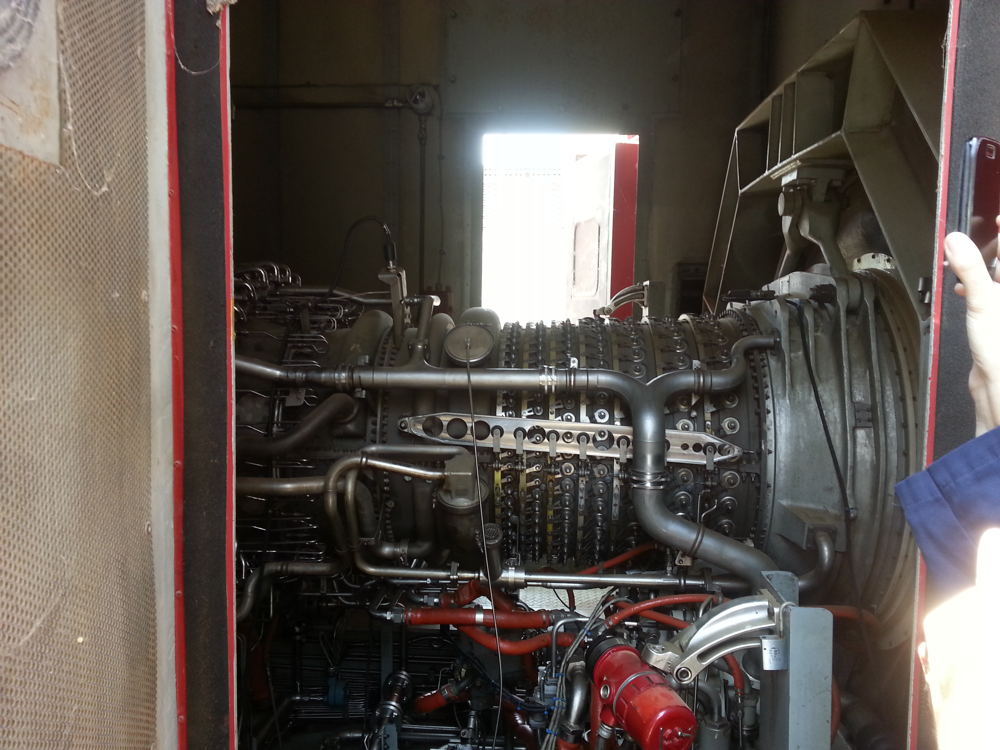
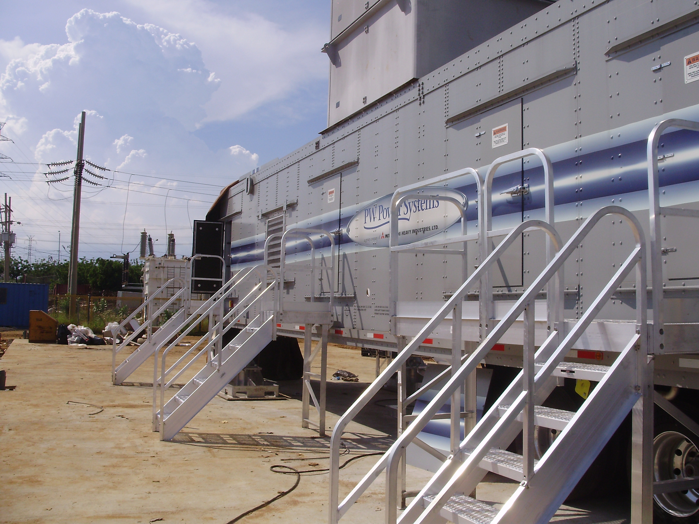
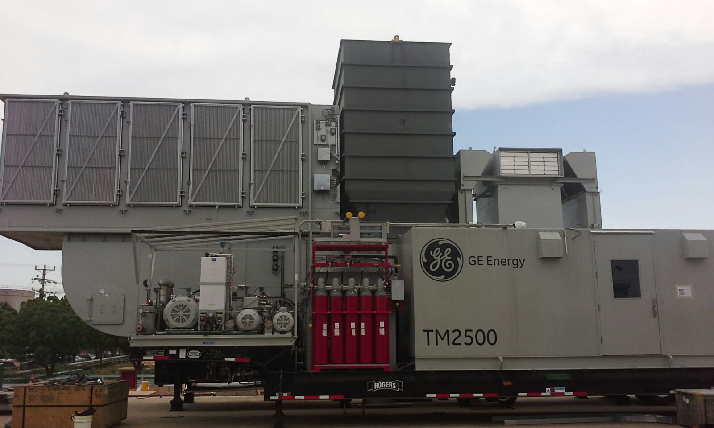

Resumo
Engenheiro Químico com 8 anos de experiência em Engenharia de Projetos, disciplina de Processos. Pós-graduação em Engenharia de Automação e Controle de Processos. Amplo conhecimento em softwares de simulação de processos como AspenHysys e Pipephase. Experiência em instrumentação, controle de processos, planejamento e controle de projetos. Com a capacidade de escrever relatórios, interpretar dados, usar ferramentas do Microsoft Office, normas e padrões internacionais.
Experiência de Trabalho.
Engenheiro de Projeto
Freelance
Junho de 2018 - Presente
- Design e cálculo de sistemas de abastecimento de combustível para geradores de emergência e blackstart.
- Projetos de validação pipeline e válvulas de controle.
- Projetos de validação de equipamentos e atualização de documentação e fichas técnicas

Engenheiro de Projeto (Disciplina de Automação)
Ingeniera, Construcción, Inspección y Suministros, C.A. (ICIS, C.A.) Maracaibo, Venezuela.
Fev. 2017 - Maio 2018
- Preparação de guias de design de documentos e planos correspondentes às disciplinas de Automação e Telecomunicações.
- Elaboração de fluxogramas de localização de equipamentos de automação e telecomunicações.
Engenheiro de Projeto (Disciplina de Processos)
Ingeniera, Construcción, Inspección y Suministros, C.A. (ICIS, C.A.) Maracaibo, Venezuela.
Ago. 2013 - Fev. 2017.
● "RENOVACIÓN GENERACIÓN ELÉCTRICA DEL CRP RENGEL".
Punto Fijo/Maracaibo, Venezuela.
Desenvolvido pela PDVSA, consistiu na instalação de três (3) turbogeradores GE LM2500 + G4 (32,6 MW) na Refinaria Cardón e na Refinaria Amuay. 
● “SUMINISTRO E INSTALACIÓN DE UNIDADES DE GENERACIÓN MOVILES”.
Maracaibo, Venezuela.
Desenvolvido pela CORPOELEC, o projeto consistiu na instalação de quatro (4) turbogeradores MOBILE-FT8 (25MW) da PWPS (Pratt & Whitney Power Systems) no Complexo Termelétrico General Rafael Urdaneta. 
● “INGENIERÍA, PROCURA Y CONSTRUCCIÓN PARA UNIDADES MOVILES DE GENERACION DE EMERGENCIA – VENEZUELA”.
Maracaibo, Venezuela.
Desenvolvido pela CORPOELEC, o projeto incluiu a construção e comissionamento de cinco (5) unidades turbogeradoras aeroderivadas GE TM-2500 + (30MW) nos estados de Zulia (3) e Falcón (2).
Entre as atividades realizadas estão:
- Design de sistemas de abastecimento de combustível e água para equipamentos.
- Elaboração de balanços de massa e energia utilizando os programas de simulação AspenHysys e PIPEPHASE.
- Dimensionamento de equipamentos e tubulações de processo.
- Elaboração de diagramas e fluxogramas de processos.
- Elaboração de lista de linhas principais, lista de equipamentos.
- Elaboração de fichas técnicas de equipamentos.
- Projetos de sistemas de refrigeração.
- Suporte na validação dos equipamentos adquiridos.
- Coleta de dados durante as visitas de campo.
- Planejamento e controle de entregas de documentos.

Estagiário (Disciplina de Processos)
Ingenieros Electricistas y Mecánicos C.A (INELMECA) Maracaibo, Venezuela.
Maio 2013 - Jun. 2013
- Cálculo e simulação de um gasoduto para o transporte de gas combustível.